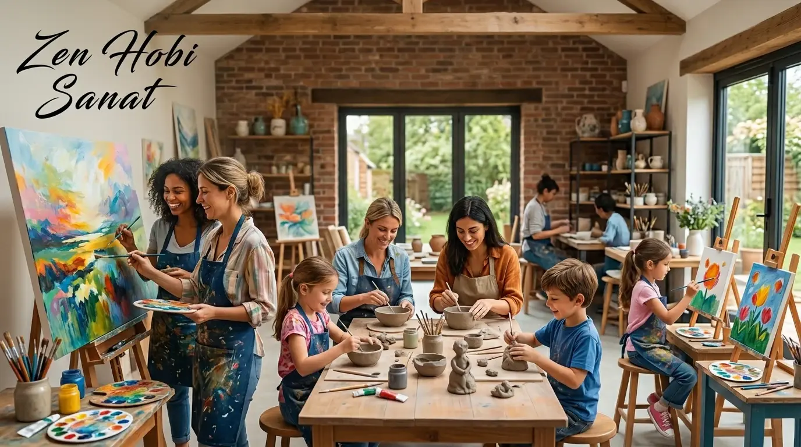

Frequently Asked Questions
Everything you might want to know about our studios, enrollment and the benefits of art. Can't find your answer? Write to us.
What art brings to a person
Making art reduces stress, brings your attention into the present moment, builds confidence, and makes room for emotions to be expressed in a healthy way. Regular practice strengthens hand-eye coordination, creative problem-solving and patience.
Yes. Focusing on handwork brings the mind into the 'now' and helps ease tension. Setting your phone and the weight of the day aside in the studio, and flowing into a single task, is genuinely restful for the mind.
No. The brain can learn new skills at any age. We have students who tried ceramics for the very first time in their sixties — what matters isn't talent, but regular, enjoyable practice.
Absolutely. Art isn't an innate gift, it's a learned skill. With the right technique and a bit of patience, anyone can create — we're with you at every step.
The good that clay does
Working with clay is a powerful sensory experience; it stimulates the sense of touch and develops hand strength and finger dexterity. The rhythm of shaping clay is meditative — it teaches patience, focus on the present, and accepting the outcome.
The softness of clay is soothing, and being able to make a mistake and start over again eases the pressure of perfectionism. Bringing a three-dimensional object into being from nothing gives a powerful sense of satisfaction and confidence.
You'll learn clay preparation, hand-building techniques (pinch, coil and slab), shaping, drying, glazing and firing. At the end of the process, you'll take home your own piece that you can use in everyday life.
Breathing through colour
Painting develops observation skills and a sense of colour and composition, and teaches you to translate emotions into a visual language. Regular painting sharpens focus, reduces anxiety and strengthens visual memory.
Yes. We start from basic seeing and drawing habits, and with techniques like pouring art, which require no brush skills at all, you get satisfying results from day one.
It's a brushless, deeply relaxing technique made by controlled pouring of fluid acrylic paints. Since part of the result is left to the paint's natural flow, it suits every age and anyone with zero experience.
Thinking in three dimensions
Sculpture develops three-dimensional thinking, a sense of volume and balance, and spatial intelligence. Shaping material strengthens patience, planning and fine motor skills; turning an abstract idea into a tangible object provides deep satisfaction.
We mainly work with clay and plaster to create busts, figures and free-form pieces, progressing step by step through observation and modelling techniques.
The effects of art on children
Fine motor skills, hand-eye coordination, patience and focus all develop; confidence and self-expression grow stronger. A child who tries things without fear of making mistakes learns creative problem-solving.
Art is one of the rare activities that supports cognitive, emotional, social and physical development all at once. A child who experiments freely with colour, form and material builds imagination, focus and decision-making skills; and creating a finished piece nurtures their confidence.
Children safely express feelings they can't yet put into words through colour and form; this supports recognising and regulating emotions. In group studios, they learn to share, take turns, appreciate one another's work, and create together.
Working with clay is a powerful sensory experience; it develops small hand muscles, finger control and hand-eye coordination. Being able to shape, undo and reshape something teaches patience, and the freedom to 'make mistakes' eases the pressure of perfectionism.
Yes. Regular art practice builds attention span, fine motor skills and visual-spatial thinking, which carry over positively into writing, reading and maths. It also offers a productive, screen-free break that rests the mind.
Our Creative Kids Studio is designed for school-age children, and groups are organised by age. We plan the right day and time together with you.
Studio and enrollment
No. All materials and equipment are ready at the studio; all you need to bring is yourself. An apron is provided by us.
Yes. If you miss a class, you can make it up by joining another suitable class within the same month. Unfortunately, classes not made up within the same month expire.
We offer weekday, weekend and evening options. We work out the day that suits you best together at enrollment; because our groups are kept small, everyone gets personal attention.
Just fill out the enrollment form; we'll call you shortly to work out the right studio, day and time together. You're also welcome to message us on WhatsApp.
Yes. We offer an English-language lesson option for international participants; just let us know your preference when you enroll.
Everyday moments from the studio
New pieces, open spots and workshop announcements go up on Instagram first. It's the closest look at the studio's everyday life — come get to know us there too.
Follow on Instagram


Couldn't find the answer you're looking for?
We're here to help you choose the right studio and answer all your questions. Write to us now, and let's plan it together.